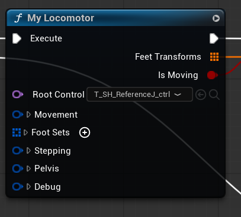

-
Procedural Spider Locomotion Epic’s Locomotor extended with custom foot placement and physics.
Uneven Terrain
I built the spider’s gait on Epic’s Locomotor, with runtime stepping and foot placement that adapts to uneven terrain.

Locomotor provides foot targets; Full Body IK solves the leg poses. Any Orientation
Epic’s probes assumed world Z. I fixed them to follow the rig’s orientation, including full 180° inversions.
Offsetsets the ground probe’s direction and reach.LocomotorCore.cppBefore const FVector Offset = FVector(0, 0, MaxHeight);After const FVector LocalUp = Foot.ReferenceWorld .GetRotation().GetUpVector(); const FVector Offset = LocalUp * MaxHeight;Narrow Supports
I added inward sphere casts to find side contacts when Epic’s ground probes miss narrow supports.
Added inward probe FVector TowardBody = BodyLocation - RefLocation; TowardBody.Normalize(); const FVector End = RefLocation + LocalDown * InwardProbeDistanceDown + TowardBody * InwardProbeDistance;Automatic Surface Alignment
I use the combined normal of surrounding sphere probes to align the rig’s pitch and roll.
Reference tilt · pseudocode P = MAIN.position normalSum = (0, 0, 0) for d in grid3D(0, ±0.5, ±1) except zero: hit = sphereCast(P, P + unit(d) * 500, 50) if hit: normalSum += hit.normal PlantNormal = unit(normalSum) axis = unit(cross((0, 0, 1), PlantNormal)) angle = acos(dot((0, 0, 1), PlantNormal)) tilt = axisAngle(axis, angle) reference.rotation = tilt * MAIN.rotationPhysical Response
I integrated Control Rig Physics after Locomotor and Full Body IK. Spring-damped bodies add inertia and world-collision response, while kinematic anchors preserve procedural control.
-
Physics-Driven Death Reactions Epic’s Physics Control integrated with directional stumbles, gore, and ragdolls.
Physics Control Integration
I integrated Epic’s Physics Control with the death animations. Kinematic feet preserve the stepping motion, while spring-damped controls give the body a physical response.
Directional Stumbling
I select the stumble animation from the hit direction, then blend it into the physical collapse.

My death-reaction state machine. Leg loss skips Stumbling. Gore System Support
I integrated the reactions with Chernobylite 2’s gore system. Dismemberment changes the state transitions and timing, including a faster collapse after head loss.
Ground Interaction
I use animation poses as targets for the simulated body. Physics Control drives the limbs toward those poses, while collisions with the floor shape the final movement.
-
Procedural Boss Animation Believable boss-fight motion with minimal baked animation.
Secondary Motion
I combined Unreal’s Physical Animation with world-space spring interpolation of bone positions and rotations. Sinusoidal time functions generate bone targets for the cape and feet. The cape and limbs gain believable secondary motion with no baked animation.
Whole-Character Control
I drove the whole character procedurally, using minimal baked animation for the scythe. This keeps animation authoring inexpensive while producing effective boss attacks.
-
Custom Gameplay Ability System Chernobylite 2: custom abilities, motion correction and enemy attacks.
Custom Ability System
I wrote my own gameplay ability system for Chernobylite 2 to avoid the boilerplate of Epic’s GAS by making the whole system DataTable-driven. It handles ability activation, resource checks, cooldowns, input and replication, with attacks authored as Blueprint ability actors.
Rotation Around A Planted Foot
I built rotation around a chosen pivot for large enemies. A notify selects a bone—here, a planted foot—and my system rotates the whole actor around that foot, keeping the turn grounded.
MotionFix Root Correction
I built MotionFix, my own root-motion correction system. Notify states in animation montages control when an enemy turns, tracks a target or adjusts its movement, letting me tune each attack without rebaking the animation.
Hundreds Of Enemy Attacks
I designed, oversaw and implemented hundreds of enemy attacks for Chernobylite 2. This collection shows the range of attacks built on the same custom ability framework, from regular enemies to bosses.
-
Procedural Hit Reactions Additive reactions from hit location and direction across different skeletons.
Hit Location And Direction
I built these hit reactions entirely in Control Rig, with zero baked hit-reaction animation. The rig calculates additive rotations from hit location and direction. The struck area responds most strongly, with rotation falling off along the skeletal hierarchy.
One Control Rig, Multiple Skeletons
I reused one Control Rig across humanoid and creature skeletons. It imports each character’s skeleton and calculates reactions from its hierarchy, so the same hit-reaction logic works across different body shapes.
-
Dialogue System Chernobylite 2: MetaHuman emotions, audio-driven lip sync, and head/eye tracking.
Procedural Facial Emotions
I created the MetaHuman dialogue system for Chernobylite 2. Facial emotion loops recorded with an iPhone play as an ambient layer, with expressions selected procedurally from each dialogue line.
Audio-Driven Lip Sync
I integrated audio-driven facial animation with the MetaHuman rig. Voice recordings drive the lip sync, while the dialogue system combines it with the ambient facial emotions.
Head And Eye Tracking
I added procedural head and eye tracking so characters keep their attention on the player or the current dialogue partner. Small gaze shifts help the look feel natural as the target moves.
Every Dialogue In Chernobylite 2
I combined iPhone-recorded emotions, audio-driven lip sync, and head/eye tracking to power every dialogue in Chernobylite 2.

-
Motionmatching Locomotion Chernobylite 2: Unreal motion matching with procedural weapon posing.
Main Hero Locomotion
I integrated Unreal Engine’s motion matching for the main hero in Chernobylite 2. The same unarmed locomotion set drives running, turns and crouching, with weapon poses layered over the movement.
Procedural Weapon Posing
I author one holding pose per weapon and reuse unarmed locomotion. The Animation Blueprint converts whole-character movement into an additive relative to neutral idle, then applies it over the weapon pose.
Per-weapon data sets additive alphas for each clavicle, upper arm and forearm. The arms carry the hands procedurally while preserving the authored grip.

Animation Blueprint flow, simplified. -
OpenGL Locomotion & Animation Graph Built from scratch in C++: real-time rendering and a full skeletal animation pipeline.
Rendering From Scratch
I built animFlex in C++, writing the OpenGL renderer and locomotion system from scratch, without a game engine or animation plugins. The renderer uses dual-quaternion skinning.
Emscripten compiles the C++ code to WebAssembly, so the same project runs in the browser with WebGL.
Live Animation Graph
I adapted Rete.js to build the node editor and connected it to my C++ animation runtime. Nodes, connections and parameters update the running graph immediately, without a graph compilation step.
Custom CCD IK
I implemented cyclic coordinate descent IK in C++, with knee hinge limits and smooth blending into the animated pose. Changing the target moves the foot in real time; the inset shows the CCD IK node driving the solve.